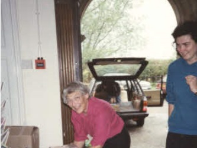
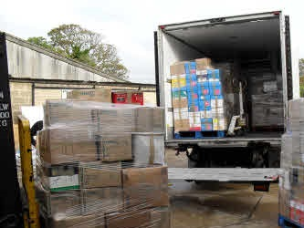
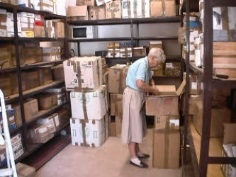
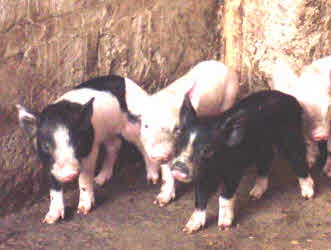
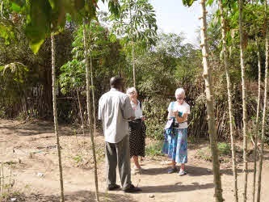

We began in 1991, sending a small shipment of only 25 boxes, since then we have sent 75 shipments, with 14,000 boxes, at a cost of £38666 to the Gambia. In 1991, schools in the Gambia needed help. Education wasn't compulsory and was only designed for pupils aged 7-14. The Catholic Mission built schools where they could, but they had to pay all the staff, and provide all the equipment.
Tap for more





❮
❯